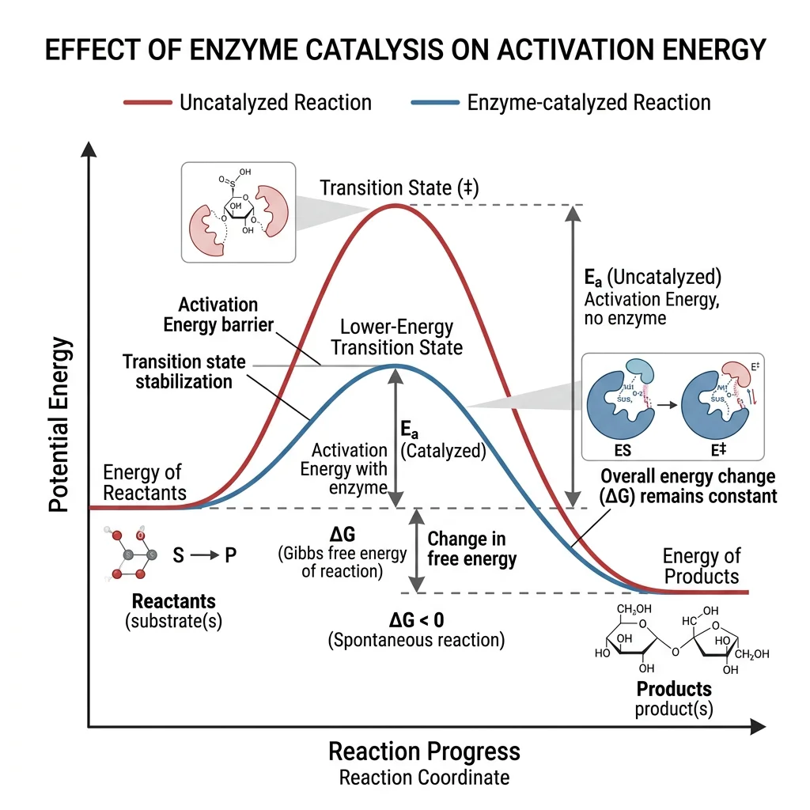
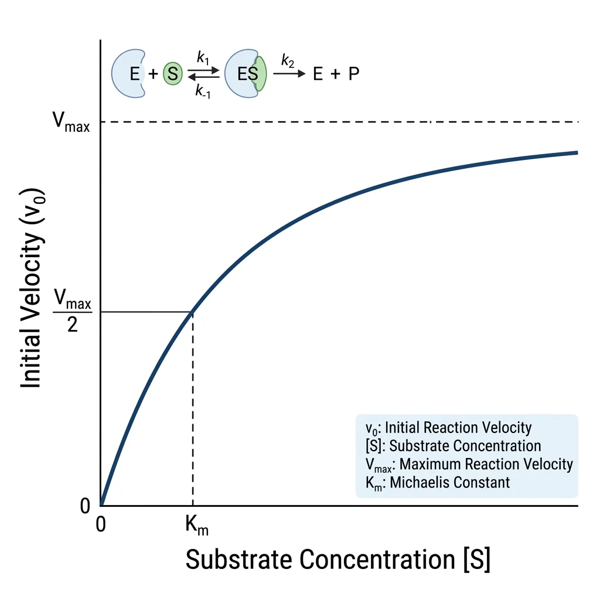
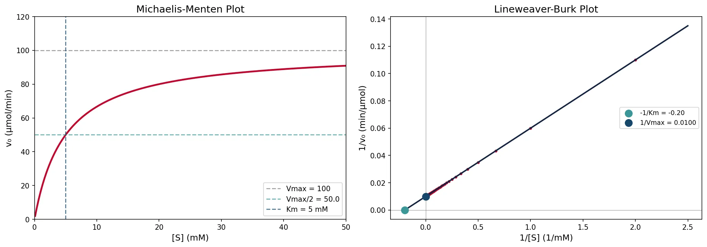
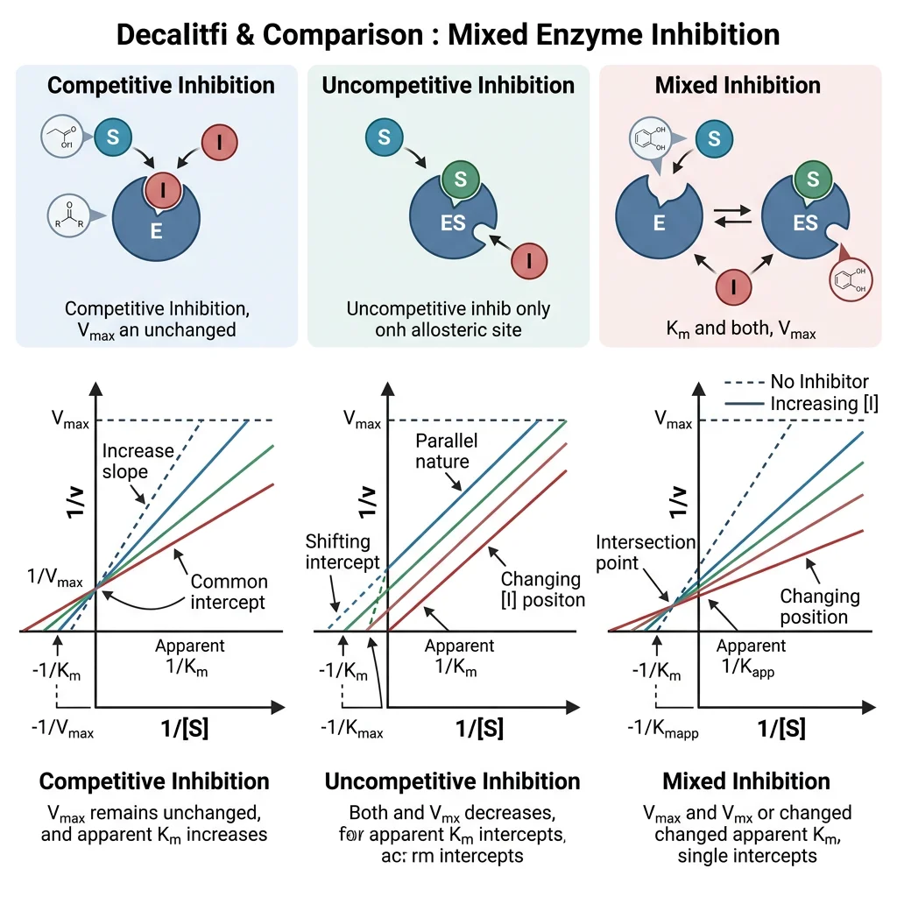
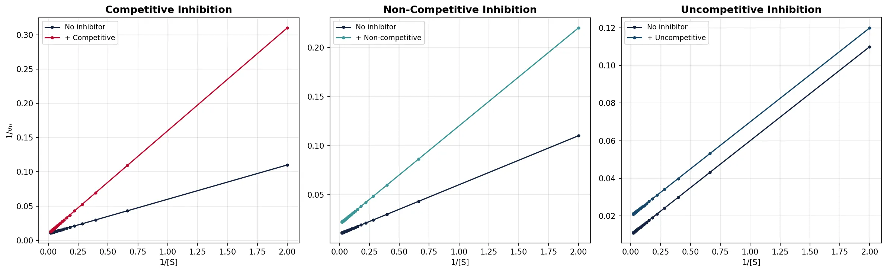
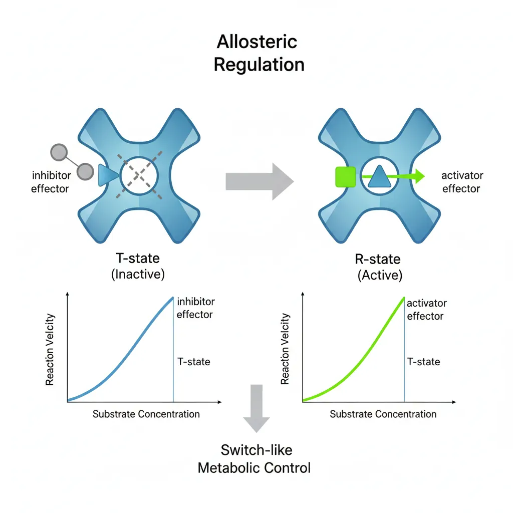
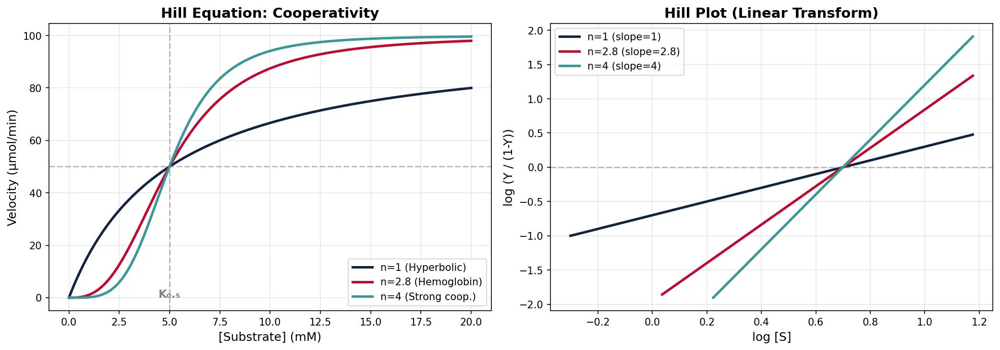

Biochemistry Mastery
Biological Chemistry Fundamentals
Atoms, bonds, functional groups, thermodynamicsWater, pH & Biological Buffers
Water polarity, pH, Henderson-Hasselbalch, blood buffersAmino Acids & Protein Structure
Amino acid classes, peptide bonds, protein foldingEnzymes & Catalysis
Kinetics, Michaelis-Menten, inhibition, regulationCarbohydrates & Lipids
Sugars, glycogen, fatty acids, cholesterol, membranesMetabolism & Bioenergetics
ATP, glycolysis, gluconeogenesis, redox carriersCitric Acid Cycle & Oxidative Phosphorylation
Acetyl-CoA, ETC, ATP synthase, oxygen dependenceSignal Transduction & Cell Communication
GPCRs, kinases, calcium, hormone cascadesNucleic Acids & Gene Expression
DNA, replication, transcription, translation, epigeneticsBrain & Nervous System Biochemistry
Neurotransmitters, ion gradients, myelin, neurodegenerationHeart & Muscle Biochemistry
Cardiac metabolism, actin-myosin, energy systemsLiver Biochemistry
Glucose homeostasis, detox, urea cycle, bileKidney Biochemistry & Acid-Base
pH regulation, ion transport, hormonal functionsEndocrine System Biochemistry
Hormone classes, signaling, glucose & stress controlDigestive System Biochemistry
Gastric acid, enzymes, bile, absorption, microbiomeImmune System Biochemistry
Antibodies, cytokines, complement, oxidative burstAdipose Tissue & Energy Balance
Triglycerides, lipolysis, leptin, obesityTissue-Specific Metabolism
Fed vs fasting, organ fuel selection, starvationMolecular Basis of Disease
Diabetes, cancer metabolism, neurodegenerationClinical Biochemistry & Diagnostics
Blood tests, liver/kidney markers, lipid panelsEnzyme Fundamentals
Enzymes are biological catalysts — mostly proteins — that accelerate chemical reactions by factors of 10⁶ to 10¹⁷ without being consumed. They are the molecular machines that make life possible: virtually every metabolic reaction in living cells is catalyzed by a specific enzyme. Without enzymes, reactions essential for life (like DNA replication, protein synthesis, and ATP production) would proceed so slowly they'd be biologically irrelevant.

Catalysis Principles
Enzymes lower the activation energy (Eₐ) — the energy barrier that must be overcome for a reaction to proceed. They achieve this through several catalytic strategies working in concert:
| Catalytic Strategy | Mechanism | Example |
|---|---|---|
| Proximity & Orientation | Brings substrates together in precise alignment; effective concentration increase of ~10⁸ M | Most enzymes — substrates don't need to collide randomly |
| Acid-Base Catalysis | Amino acid side chains donate/accept protons during the reaction (His, Glu, Asp, Lys) | RNase A: His12 (base) and His119 (acid) in cyclic mechanism |
| Covalent Catalysis | Transient covalent bond forms between enzyme and substrate via nucleophilic residue (Ser, Cys, His) | Serine proteases (chymotrypsin): acyl-enzyme intermediate |
| Metal Ion Catalysis | Metal ions stabilize negative charges, mediate redox, or activate water molecules | Carbonic anhydrase: Zn²⁺ activates H₂O → OH⁻ (nucleophile) |
| Transition State Stabilization | Active site is complementary to the transition state, not the substrate — preferentially binds and stabilizes it | All enzymes — Linus Pauling's fundamental insight (1946) |
| Strain & Distortion | Binding induces strain in the substrate, forcing it toward the transition state geometry | Lysozyme: distorts sugar ring into half-chair conformation |
Eduard Buchner & Cell-Free Fermentation (1897)
For decades, the vitalist view held that fermentation required intact living cells — some mysterious "vital force." In 1897, Eduard Buchner ground up yeast cells with sand, filtered out all cellular debris, and demonstrated that the cell-free extract could still ferment sugar into ethanol and CO₂. This proved that catalysis was performed by specific molecules (which he called "zymase," from Greek zyme = leaven), not by life itself. Buchner received the 1907 Nobel Prize in Chemistry, and the study of enzymes as chemical entities was born.
Active Sites
The active site is a three-dimensional cleft or pocket formed by amino acid residues from different parts of the polypeptide chain brought together by protein folding. Though enzymes may contain hundreds of residues, typically only 3–12 are directly involved in catalysis.
Key active site properties include:
- Small fraction of total volume: Active site occupies a tiny portion (~2%) of the enzyme
- Three-dimensional cleft: Created by residues far apart in sequence but close in 3D space
- Complementary to transition state: Better fit for the transition state than the substrate (Pauling, 1946)
- Unique microenvironment: Often excludes water; can have unusual pKₐ values for key residues
- Substrate specificity: Determined by size, shape, charge, and hydrophobicity of the binding pocket
Cofactors & Coenzymes
Many enzymes require non-protein chemical partners to function. The complete, catalytically active enzyme is called a holoenzyme (protein part alone = apoenzyme).
| Category | Nature | Examples | Function |
|---|---|---|---|
| Metal ions | Inorganic cofactors | Zn²⁺, Mg²⁺, Fe²⁺/³⁺, Cu²⁺, Mn²⁺ | Lewis acids; redox; structural |
| Coenzymes (loosely bound) | Organic molecules; co-substrates | NAD⁺/NADH, FAD/FADH₂, CoA, ATP | Carry electrons, acyl groups, phosphoryl groups |
| Prosthetic groups (tightly bound) | Organic molecules permanently attached | Heme (cytochromes), biotin, PLP, FMN | Electron transfer, CO₂ fixation, transamination |
Lock-and-Key vs Induced Fit
How does an enzyme recognize its specific substrate among thousands of molecules in the cell? Two models explain enzyme-substrate recognition, and understanding their differences is crucial for grasping enzyme specificity.
Lock-and-Key Model (Emil Fischer, 1894)
The lock-and-key model proposes that the enzyme's active site has a rigid, pre-formed shape that is exactly complementary to the substrate — like a key fitting into its lock. Only the correct substrate (key) can fit into the active site (lock).
Emil Fischer & Sugar Specificity
German chemist Emil Fischer observed that enzymes exhibited remarkable specificity — an enzyme acting on α-glucosides would not cleave β-glucosides, despite the substrates being nearly identical (differing only in the orientation of one hydroxyl group). Fischer's elegant explanation: "Enzyme and glucoside must fit each other like a lock and key." This simple analogy became one of the most famous in all of biochemistry. While the model correctly explains specificity, it cannot explain why enzymes bind substrates less tightly than transition states, nor why some enzymes show broad substrate specificity.
Induced Fit Model (Daniel Koshland, 1958)
The induced fit model proposes that the active site is not rigid but flexible — it changes shape upon substrate binding, molding itself around the substrate like a glove conforming to a hand. This dynamic conformational change brings catalytic residues into optimal positions for catalysis.
| Feature | Lock-and-Key | Induced Fit |
|---|---|---|
| Active site rigidity | Rigid, pre-formed complementarity | Flexible; reshapes upon binding |
| Conformational change | None | Both enzyme and substrate may change |
| Explains specificity | Yes — shape complementarity | Yes — wrong substrates can't induce correct change |
| Explains catalysis | Partially (substrate binding only) | Yes — conformational change activates catalytic groups |
| Classic example | Trypsin specificity pocket (Asp189 attracts Lys/Arg) | Hexokinase closes ~8 Å around glucose, excluding water |
| Modern view | Oversimplified but useful for specificity | Widely accepted; supported by X-ray crystallography |
Michaelis–Menten Kinetics
In 1913, Leonor Michaelis and Maud Menten published a mathematical framework that quantitatively describes how enzyme reaction rates depend on substrate concentration — one of the most important equations in all of biochemistry.

The model assumes a simple two-step mechanism:
- Binding: E + S ⇌ ES (reversible, fast equilibrium)
- Catalysis: ES → E + P (irreversible, rate-limiting)
This leads to the Michaelis–Menten equation:
Where:
• v₀ = initial reaction velocity
• Vmax = maximum velocity (all enzyme molecules saturated)
• [S] = substrate concentration
• Km = Michaelis constant = [S] at which v₀ = Vmax/2
Km & Vmax — The Key Parameters
| Parameter | Definition | What It Tells Us | Typical Values |
|---|---|---|---|
| Km | Substrate concentration at half-Vmax | Approximate affinity (low Km = high affinity); reflects [S] needed for significant catalysis | 10⁻¹ – 10⁻⁷ M |
| Vmax | Rate when 100% enzyme is ES complex | Maximum catalytic capacity; depends on enzyme concentration: Vmax = kcat × [E]T | Varies with [E] |
| kcat | Turnover number (catalytic constant) | Substrate molecules converted per enzyme molecule per second | 1 – 10⁷ s⁻¹ |
| kcat/Km | Catalytic efficiency (specificity constant) | Overall enzyme efficiency; upper limit = diffusion limit (~10⁸–10⁹ M⁻¹s⁻¹) | 10¹ – 10⁹ M⁻¹s⁻¹ |
"Catalytically Perfect" Enzymes
Some enzymes have reached the theoretical speed limit — every collision between enzyme and substrate leads to product formation. These enzymes operate at the diffusion limit (kcat/Km ≈ 10⁸–10⁹ M⁻¹s⁻¹), meaning the reaction rate is limited only by how fast substrate can diffuse to the active site. Examples include carbonic anhydrase (kcat = 10⁶ s⁻¹ — converts CO₂ + H₂O ⇌ HCO₃⁻ + H⁺ one million times per second), superoxide dismutase (destroys toxic O₂⁻ radicals), and triose phosphate isomerase (TIM — a glycolysis enzyme). Evolution literally cannot make these enzymes any faster.
Lineweaver–Burk Plot
The Lineweaver–Burk plot (double-reciprocal plot) linearizes the Michaelis–Menten equation by taking the reciprocal of both sides:
This is a straight line (y = mx + b) where:
• Slope = Km/Vmax
• y-intercept = 1/Vmax
• x-intercept = −1/Km
The Lineweaver–Burk plot is especially valuable for diagnosing inhibition types — different inhibitors produce distinct patterns of line shifts (see Section 4). However, it amplifies experimental error at low [S], so modern enzymologists prefer nonlinear curve fitting to the Michaelis–Menten equation directly.
import numpy as np
import matplotlib
matplotlib.use('Agg')
import matplotlib.pyplot as plt
# Michaelis-Menten kinetics simulation
Vmax = 100 # μmol/min
Km = 5 # mM
# Generate substrate concentrations
S = np.linspace(0.1, 50, 200)
# Michaelis-Menten equation
v = (Vmax * S) / (Km + S)
fig, axes = plt.subplots(1, 2, figsize=(14, 5))
# Plot 1: Michaelis-Menten curve
axes[0].plot(S, v, color='#BF092F', linewidth=2.5)
axes[0].axhline(y=Vmax, color='gray', linestyle='--', alpha=0.7, label=f'Vmax = {Vmax}')
axes[0].axhline(y=Vmax/2, color='#3B9797', linestyle='--', alpha=0.7, label=f'Vmax/2 = {Vmax/2}')
axes[0].axvline(x=Km, color='#16476A', linestyle='--', alpha=0.7, label=f'Km = {Km} mM')
axes[0].set_xlabel('[S] (mM)', fontsize=12)
axes[0].set_ylabel('v₀ (μmol/min)', fontsize=12)
axes[0].set_title('Michaelis-Menten Plot', fontsize=14)
axes[0].legend(fontsize=10)
axes[0].set_xlim(0, 50)
axes[0].set_ylim(0, 120)
# Plot 2: Lineweaver-Burk (double reciprocal)
S_lb = np.linspace(0.5, 50, 100)
v_lb = (Vmax * S_lb) / (Km + S_lb)
axes[1].plot(1/S_lb, 1/v_lb, 'o', color='#BF092F', markersize=3)
# Fit line
x_fit = np.linspace(-0.2, 2.5, 100)
y_fit = (Km/Vmax) * x_fit + 1/Vmax
axes[1].plot(x_fit, y_fit, color='#132440', linewidth=2)
axes[1].axhline(y=0, color='gray', linewidth=0.5)
axes[1].axvline(x=0, color='gray', linewidth=0.5)
axes[1].scatter([-1/Km], [0], color='#3B9797', s=100, zorder=5, label=f'-1/Km = {-1/Km:.2f}')
axes[1].scatter([0], [1/Vmax], color='#16476A', s=100, zorder=5, label=f'1/Vmax = {1/Vmax:.4f}')
axes[1].set_xlabel('1/[S] (1/mM)', fontsize=12)
axes[1].set_ylabel('1/v₀ (min/μmol)', fontsize=12)
axes[1].set_title('Lineweaver-Burk Plot', fontsize=14)
axes[1].legend(fontsize=9)
plt.tight_layout()
plt.savefig('michaelis_menten.png', dpi=150)
plt.show()
print(f"Km = {Km} mM (substrate concentration at half Vmax)")
print(f"Vmax = {Vmax} μmol/min (maximum velocity)")
print(f"Catalytic efficiency = kcat/Km determines enzyme 'perfection'")

Enzyme Inhibition
Enzyme inhibitors are molecules that decrease enzyme activity. They are critically important in biology (metabolic regulation), medicine (drug design), and toxicology (poisons). Reversible inhibitors bind through non-covalent interactions and can be removed; irreversible inhibitors form permanent covalent bonds (e.g., aspirin acetylates COX, nerve agents phosphorylate acetylcholinesterase).

Competitive Inhibition
A competitive inhibitor resembles the substrate and binds to the active site, competing directly with the substrate for binding. It can be overcome by increasing substrate concentration.
| Property | Effect | Lineweaver–Burk Signature |
|---|---|---|
| Vmax | Unchanged (at infinite [S], inhibitor is outcompeted) | Same y-intercept |
| Kmapp | Increased (need more substrate for half-Vmax) | x-intercept moves right (closer to zero) |
| Lines | Intersect at y-axis | Different slopes, same y-intercept |
Methotrexate — Competitive Inhibition Saves Lives
Methotrexate is a structural analog of folic acid that competitively inhibits dihydrofolate reductase (DHFR), an enzyme essential for synthesizing thymidine (a DNA building block). By blocking DHFR, methotrexate starves rapidly dividing cells of the nucleotides they need to replicate DNA. This makes it extraordinarily effective against cancer (leukemia, lymphoma, breast cancer) and autoimmune diseases (rheumatoid arthritis, psoriasis). Methotrexate binds DHFR ~1000× more tightly than the natural substrate dihydrofolate — a testament to rational drug design based on enzyme kinetics.
Non-Competitive Inhibition
A non-competitive inhibitor binds to a site other than the active site (an allosteric site) and can bind the free enzyme (E) or the enzyme-substrate complex (ES) with equal affinity. It doesn't prevent substrate binding but distorts the enzyme's shape, reducing catalytic efficiency.
| Property | Effect | Lineweaver–Burk Signature |
|---|---|---|
| Vmax | Decreased (fewer functional enzyme molecules) | Higher y-intercept |
| Km | Unchanged (substrate binding unaffected) | Same x-intercept |
| Lines | Intersect on x-axis | Different slopes, same x-intercept |
Uncompetitive Inhibition
An uncompetitive inhibitor binds only to the ES complex (not free enzyme). This is relatively rare for single-substrate reactions but common in multi-substrate enzyme mechanisms.
| Property | Effect | Lineweaver–Burk Signature |
|---|---|---|
| Vmax | Decreased | Higher y-intercept |
| Kmapp | Decreased (apparent increase in affinity) | x-intercept moves left |
| Lines | Parallel (same slope) | Parallel lines — diagnostic! |
Non-competitive → Vmax ↓, Km same (lines intersect at x-axis).
Uncompetitive → Vmax ↓, Km ↓ (parallel lines).
Mixed → Vmax ↓, Km changes (lines intersect in quadrant II or III).
import numpy as np
import matplotlib
matplotlib.use('Agg')
import matplotlib.pyplot as plt
# Compare all three inhibition types on Lineweaver-Burk plots
Vmax = 100 # μmol/min
Km = 5 # mM
S = np.linspace(0.5, 50, 50)
inv_S = 1 / S
# No inhibitor
v_none = (Vmax * S) / (Km + S)
# Competitive: Km_app increases, Vmax unchanged
Km_comp = Km * 3 # α = 3
v_comp = (Vmax * S) / (Km_comp + S)
# Non-competitive: Vmax decreases, Km unchanged
Vmax_noncomp = Vmax / 2 # α' = 2
v_noncomp = (Vmax_noncomp * S) / (Km + S)
# Uncompetitive: both Vmax and Km decrease
alpha_prime = 2
v_uncomp = (Vmax/alpha_prime * S) / (Km/alpha_prime + S)
fig, axes = plt.subplots(1, 3, figsize=(16, 5))
# Competitive
axes[0].plot(inv_S, 1/v_none, 'o-', color='#132440', markersize=3, label='No inhibitor')
axes[0].plot(inv_S, 1/v_comp, 'o-', color='#BF092F', markersize=3, label='+ Competitive')
axes[0].set_title('Competitive Inhibition', fontsize=13, fontweight='bold')
axes[0].set_xlabel('1/[S]')
axes[0].set_ylabel('1/v₀')
axes[0].legend(fontsize=9)
# Non-competitive
axes[1].plot(inv_S, 1/v_none, 'o-', color='#132440', markersize=3, label='No inhibitor')
axes[1].plot(inv_S, 1/v_noncomp, 'o-', color='#3B9797', markersize=3, label='+ Non-competitive')
axes[1].set_title('Non-Competitive Inhibition', fontsize=13, fontweight='bold')
axes[1].set_xlabel('1/[S]')
axes[1].legend(fontsize=9)
# Uncompetitive
axes[2].plot(inv_S, 1/v_none, 'o-', color='#132440', markersize=3, label='No inhibitor')
axes[2].plot(inv_S, 1/v_uncomp, 'o-', color='#16476A', markersize=3, label='+ Uncompetitive')
axes[2].set_title('Uncompetitive Inhibition', fontsize=13, fontweight='bold')
axes[2].set_xlabel('1/[S]')
axes[2].legend(fontsize=9)
for ax in axes:
ax.grid(True, alpha=0.3)
plt.tight_layout()
plt.savefig('enzyme_inhibition_lb.png', dpi=150)
plt.show()
print("Competitive: same y-intercept, different slopes")
print("Non-competitive: same x-intercept, different slopes")
print("Uncompetitive: parallel lines (same slope)")

Allosteric Regulation & Cooperativity
Many enzymes are not simply "on" or "off" — they act as molecular dimmer switches, adjustable across a range of activities. Allosteric regulation enables the cell to fine-tune metabolic flux in response to changing conditions, much like a thermostat adjusts temperature rather than just turning a heater on and off.

Allosteric Effectors
An allosteric effector binds to a regulatory site distinct from the active site (Greek: allos = "other," stereos = "shape"), inducing a conformational change that alters catalytic activity.
| Effector Type | Effect on Activity | Conformational Shift | Classical Example |
|---|---|---|---|
| Positive (Activator) | Increases activity | Stabilizes R state (relaxed, high affinity) | AMP → phosphofructokinase (glycolysis ↑) |
| Negative (Inhibitor) | Decreases activity | Stabilizes T state (tense, low affinity) | ATP → phosphofructokinase (glycolysis ↓) |
| Homotropic | Substrate acts as effector | Binding of substrate to one subunit affects others | O₂ → hemoglobin (cooperative binding) |
| Heterotropic | Non-substrate effector | Different molecule modulates activity | 2,3-BPG → hemoglobin (reduces O₂ affinity) |
Monod-Wyman-Changeux (MWC) vs. Koshland-Némethy-Filmer (KNF)
Two competing models explain allostery in multi-subunit enzymes. The MWC Concerted Model (1965) proposes that all subunits switch between T and R states simultaneously — the enzyme is either entirely "tense" or entirely "relaxed." The KNF Sequential Model (1966) proposes that each subunit changes conformation independently upon ligand binding, inducing changes in neighboring subunits one by one. Reality is often a blend: hemoglobin follows predominantly MWC behavior, while some enzymes show sequential features. Aspartate transcarbamoylase (ATCase) — the textbook allosteric enzyme — exhibits concerted behavior with its catalytic and regulatory trimers switching states together.
Cooperativity & Sigmoid Kinetics
In multi-subunit enzymes, binding of substrate to one subunit can increase (positive cooperativity) or decrease (negative cooperativity) substrate affinity of the remaining subunits. This produces a sigmoidal (S-shaped) velocity curve rather than the hyperbolic Michaelis–Menten curve, enabling switch-like responses to changes in substrate concentration.
v = Vmax · [S]n / (K0.5n + [S]n)
Where n = Hill coefficient:
• n = 1 → no cooperativity (hyperbolic, standard M-M)
• n > 1 → positive cooperativity (sigmoidal, switch-like)
• n < 1 → negative cooperativity
• Hemoglobin: n ≈ 2.8 (strong positive cooperativity for O₂ binding)
• Note: n reflects the degree of cooperativity, not the number of binding sites
| Feature | Michaelis-Menten (Non-cooperative) | Sigmoid (Cooperative) |
|---|---|---|
| Curve Shape | Hyperbolic | Sigmoidal (S-shaped) |
| Hill Coefficient | n = 1 | n > 1 (typically 1.5–4) |
| Kinetic Constant | Km (half-saturation) | K0.5 (apparent, not true Km) |
| Response | Graded, proportional | Switch-like, highly sensitive near K0.5 |
| Lineweaver–Burk | Linear | Concave-up (non-linear) |
| Examples | Most single-subunit enzymes | Hemoglobin, PFK-1, ATCase |
import numpy as np
import matplotlib
matplotlib.use('Agg')
import matplotlib.pyplot as plt
# Compare Michaelis-Menten (n=1) vs cooperative (n=2.8) vs negative (n=0.5)
S = np.linspace(0, 20, 200)
Vmax = 100
K_half = 5
def hill_equation(S, Vmax, K_half, n):
"""Hill equation for cooperative kinetics"""
return Vmax * S**n / (K_half**n + S**n)
fig, (ax1, ax2) = plt.subplots(1, 2, figsize=(14, 5))
# Left: velocity curves
for n, label, color in [(1, 'n=1 (Hyperbolic)', '#132440'),
(2.8, 'n=2.8 (Hemoglobin)', '#BF092F'),
(4, 'n=4 (Strong coop.)', '#3B9797')]:
v = hill_equation(S, Vmax, K_half, n)
ax1.plot(S, v, linewidth=2.5, color=color, label=label)
ax1.axhline(y=Vmax/2, color='gray', linestyle='--', alpha=0.5)
ax1.axvline(x=K_half, color='gray', linestyle='--', alpha=0.5)
ax1.annotate('K₀.₅', xy=(K_half, 0), fontsize=11, ha='center',
fontweight='bold', color='gray')
ax1.set_xlabel('[Substrate] (mM)', fontsize=12)
ax1.set_ylabel('Velocity (μmol/min)', fontsize=12)
ax1.set_title('Hill Equation: Cooperativity', fontsize=14, fontweight='bold')
ax1.legend(fontsize=10)
ax1.grid(True, alpha=0.3)
# Right: Hill plot (log-log linearization)
S_hill = np.linspace(0.5, 15, 100)
for n, label, color in [(1, 'n=1', '#132440'),
(2.8, 'n=2.8', '#BF092F'),
(4, 'n=4', '#3B9797')]:
v = hill_equation(S_hill, Vmax, K_half, n)
Y = v / Vmax # fractional saturation
# Hill plot: log(Y/(1-Y)) vs log[S]
valid = (Y > 0.01) & (Y < 0.99)
log_ratio = np.log10(Y[valid] / (1 - Y[valid]))
log_S = np.log10(S_hill[valid])
ax2.plot(log_S, log_ratio, linewidth=2.5, color=color, label=f'{label} (slope={n})')
ax2.axhline(y=0, color='gray', linestyle='--', alpha=0.5)
ax2.set_xlabel('log [S]', fontsize=12)
ax2.set_ylabel('log (Y / (1-Y))', fontsize=12)
ax2.set_title('Hill Plot (Linear Transform)', fontsize=14, fontweight='bold')
ax2.legend(fontsize=10)
ax2.grid(True, alpha=0.3)
plt.tight_layout()
plt.savefig('cooperativity_hill.png', dpi=150)
plt.show()
print("Hill coefficient (n) = slope of Hill plot at half-saturation")
print("Hemoglobin n ≈ 2.8 → strong positive cooperativity")

Clinical Enzyme Applications
Enzymes are at the heart of modern medicine — as diagnostic markers (measuring enzyme levels in blood reveals tissue damage), as therapeutic agents (replacement enzymes treat genetic disorders), and as drug targets (most pharmaceuticals work by inhibiting specific enzymes). Understanding enzyme kinetics transforms abstract chemistry into life-saving clinical practice.
| Diagnostic Enzyme | Source Tissue | Clinical Significance | Condition Detected |
|---|---|---|---|
| Troponin I/T | Cardiac muscle | Gold standard for myocardial infarction | Heart attack (MI) |
| CK-MB | Cardiac muscle | Creatine kinase cardiac isoenzyme | Myocardial damage |
| ALT (SGPT) | Liver (cytoplasm) | More specific for liver than AST | Hepatitis, liver disease |
| AST (SGOT) | Liver, heart, muscle | Mitochondrial and cytoplasmic | Liver/cardiac damage |
| Amylase / Lipase | Pancreas | Lipase more specific, stays elevated longer | Acute pancreatitis |
| ALP | Bone, liver, intestine | Elevated in bile duct obstruction or bone disease | Cholestasis, Paget's disease |
| LDH | Ubiquitous | 5 isoenzymes (LDH-1 to LDH-5) | Tissue damage (non-specific) |
| GGT | Liver (biliary) | Most sensitive marker of biliary disease | Alcoholic liver disease, cholestasis |
HIV Protease Inhibitors — Structure-Based Drug Design Triumph
One of the greatest successes in rational enzyme inhibitor design is the development of HIV protease inhibitors. The HIV protease is an aspartyl protease essential for viral maturation — it cleaves polyprotein precursors into functional viral proteins. In the early 1990s, pharmaceutical teams used the 3D crystal structure of HIV protease (solved in 1989) to design transition-state analog inhibitors that mimic the tetrahedral intermediate of peptide bond hydrolysis. Saquinavir (1995), ritonavir, indinavir, and nelfinavir followed, transforming HIV from a death sentence into a manageable chronic condition. Combined with reverse transcriptase inhibitors as HAART (highly active antiretroviral therapy), these drugs reduced AIDS mortality by >80%. The key insight: if you understand an enzyme's mechanism and structure, you can design molecules to shut it down with exquisite specificity.
- ACE inhibitors (lisinopril, enalapril) — block angiotensin-converting enzyme → lower blood pressure
- Statins (atorvastatin, rosuvastatin) — competitively inhibit HMG-CoA reductase → lower cholesterol
- NSAIDs (ibuprofen, aspirin) — inhibit cyclooxygenase (COX-1, COX-2) → reduce pain and inflammation
- Proton pump inhibitors (omeprazole) — irreversibly inhibit H⁺/K⁺-ATPase → reduce stomach acid
- MAO inhibitors (selegiline) — inhibit monoamine oxidase → treat depression and Parkinson's
- Kinase inhibitors (imatinib) — target aberrant tyrosine kinases → treat cancer
Practice Problems
Problem 1: An enzyme has a Km of 4 mM and Vmax of 200 μmol/min. Calculate the reaction velocity at [S] = 12 mM.
Problem 2: A competitive inhibitor is added. The apparent Km increases to 12 mM while Vmax remains 200 μmol/min. What is the new velocity at [S] = 12 mM?
Problem 3: An enzyme shows a sigmoidal velocity curve with a Hill coefficient of 3.2. Is this positive or negative cooperativity? What type of kinetics would you predict on a Hill plot?
Problem 4: A Lineweaver-Burk plot shows two lines that are parallel (same slope). What type of inhibition is this? What happens to Km and Vmax?
Problem 5: Explain why measuring serum ALT is preferred over AST for diagnosing liver damage. What additional enzyme would you measure to distinguish hepatocellular from cholestatic liver disease?
Enzyme Kinetics Worksheet
Enzyme Kinetics Analysis Tool
Complete the worksheet below to analyze enzyme kinetics concepts. Download as Word, Excel, or PDF.
Conclusion & Next Steps
Enzymes are perhaps the most remarkable molecules in biology — protein catalysts that accelerate reactions by factors up to 1017 while maintaining exquisite specificity. In this article, we explored the fundamental principles of enzyme catalysis:
- Enzyme fundamentals — biological catalysts that lower activation energy using strategies including acid-base catalysis, covalent intermediates, and metal ion catalysis
- Substrate recognition — from Fischer's lock-and-key model to Koshland's induced fit, explaining how enzymes achieve specificity while remaining flexible
- Michaelis-Menten kinetics — the mathematical framework (Km, Vmax, kcat, catalytic efficiency) that quantifies enzyme behavior
- Enzyme inhibition — competitive, non-competitive, and uncompetitive mechanisms with distinct Lineweaver-Burk signatures and pharmacological applications
- Allosteric regulation — how multi-subunit enzymes act as molecular switches through cooperativity, feedback inhibition, and the MWC/KNF models
- Clinical applications — diagnostic enzymes (troponin, ALT, amylase), therapeutic targets (HIV protease, HMG-CoA reductase), and enzyme replacement therapy for genetic diseases
These principles form the kinetic and regulatory foundation for understanding metabolic pathways — the interconnected enzyme-catalyzed reactions that sustain life. Every pathway we study from this point forward (glycolysis, the TCA cycle, oxidative phosphorylation) is ultimately a story of enzymes working in coordinated sequences.